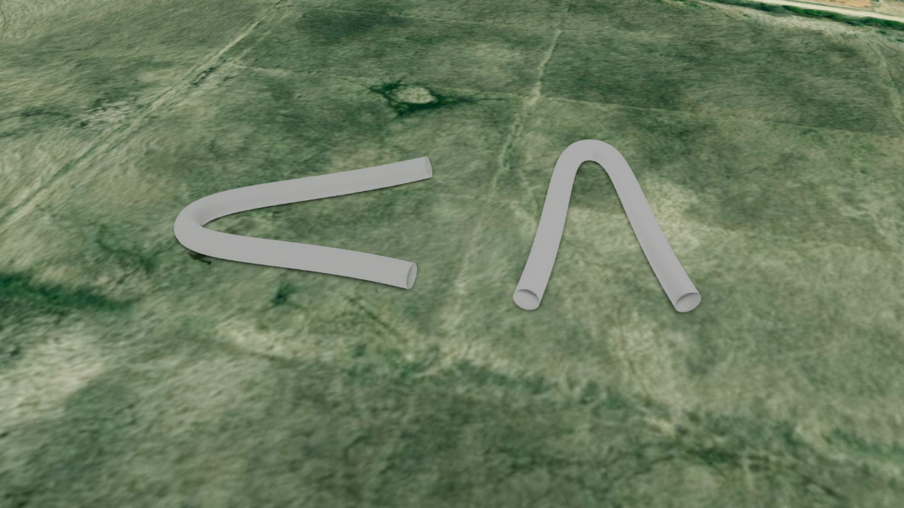
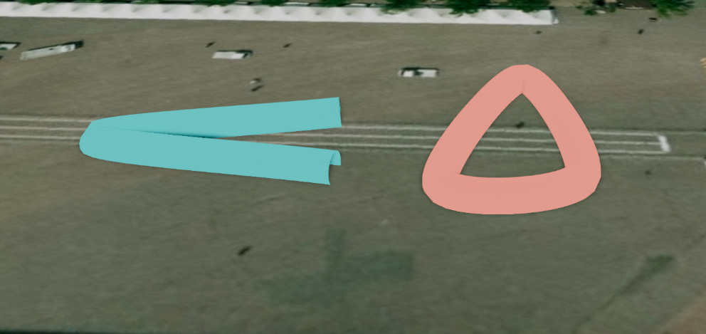

파이프 (Pipe)
목차

U3dPipe는 여러 좌표를 부드러운 곡선으로 이어 원형 단면의 관을 만드는 도형입니다.
상하수도관, 전선, 배관 경로처럼 이어지는 시설물을 표현할 때 사용합니다.
경로 좌표는 Catmull-Rom 곡선으로 보간되므로, 좌표를 듬성듬성 찍어도 매끄럽게 휘어지는 관이 만들어집니다.
흐름 애니메이션이 필요하다면 U3dPipe를 상속한 흐름 객체 (파이프)를 사용합니다.
1. 파이프 생성하기
U3dPipe 생성자로 객체를 만들고, U3dVectorLayer.addGeometry로 레이어에 등록한 뒤 경로 좌표를 지정하면 화면에 표시됩니다.
레이어를 만들고 도형을 등록·제거하는 방법은 3D Geometry 시작하기 - 도형 등록하고 제거하기에서 설명합니다.
파이프는 좌표를 이어 만드는 도형이므로 경로 좌표가 두 개 이상이어야 그려집니다.
생성 시점에는 좌표 없이 옵션만 지정하고, 등록 후 경로를 넣는 방식으로 사용합니다.
반지름(piperadius) 단위는 미터입니다.
API
U3dPipe(opt) : 파이프 객체를 생성하는 생성자
매개변수
opt(object) : 파이프 생성 옵션opt.name(string) : 객체 이름. 지정하지 않으면 자동으로 생성됩니다opt.piperadius(number) : 파이프 반지름(m). 기본값:2opt.tension(number) : 경로 곡률(0~1). 클수록 좌표를 팽팽하게 지납니다. 기본값:0.5opt.closed(boolean) : 마지막 좌표와 첫 좌표를 이어 닫을지 여부. 기본값:falseopt.pathsegments(number) : 경로 방향 세분화 정도. 클수록 곡선이 매끄러워집니다. 최소3. 기본값:64opt.radiussegments(number) : 원둘레 세분화 정도. 클수록 단면이 원에 가까워집니다. 최소3. 기본값:16opt.color(ColorRepresentation) : 색상. 기본값:'#ff0000'opt.opacity(number) : 투명도(0~1). 기본값:0.7opt.wireframe(boolean) : 와이어프레임 표시 여부. 기본값:falseopt.coordinates(Array<GeoPositionVector3>) : 경로 좌표 배열 (위경도, EPSG:4326)opt.properties(KeyValue) : 사용자 정의 속성정보
1. 파이프 생성 예제
좌표 세 개를 이어 반지름 2m의 관을 만드는 예제입니다.
상하수도관이나 배관 경로를 표현할 때 쓰는 기본 형태입니다.
const app = new GeOnDT.U3dAPP({containername: 'map'});
const vectorLayer = new GeOnDT.vector.U3dVectorLayer({name: 'vector'});
const pipe = new GeOnDT.geom.U3dPipe({
name: 'pipe_01',
piperadius: 2, // 반지름 2m
tension: 0.5, // 곡선으로 부드럽게 연결
pathsegments: 64,
radiussegments: 16,
color: '#f39c12',
opacity: 1
});
vectorLayer.addGeometry(pipe); // 벡터 레이어에 등록
// 경로 좌표를 지정하면 그때 파이프가 만들어집니다.
pipe.setPositions([
new THREE.Vector3(126.9390, 37.5190, 30),
new THREE.Vector3(126.9400, 37.5195, 30),
new THREE.Vector3(126.9410, 37.5192, 30)
]);
2. 경로 지정하기
경로는 위경도 좌표의 배열로 지정합니다.
좌표 전체를 한 번에 넣으려면 setPositions를, 하나씩 이어 붙이려면 addPosition을 사용합니다.
지정한 위경도는 레이어가 그릴 때 월드 좌표로 변환되어 반영됩니다.
변환된 월드 좌표는 getVertex로 확인할 수 있습니다.
좌표의 세 번째 값은 고도(m)이며 파이프 중심선이 지나는 높이가 됩니다.
지형 높이를 자동으로 조회하거나 따라가지 않으므로, 지면을 따라 놓으려면 각 지점의 지형 고도를 더합니다.
지형 고도는 app.getHeightAtGeographicPoint({x, y})로 조회하며, 지형 로딩이 끝난 뒤에 호출해야 실제 값을 얻습니다.
API
U3dPipe.setPositions(coordinates) : 경로 좌표 배열 전체를 지정하는 함수
매개변수
coordinates(Array<GeoPositionVector3>) : 경로 좌표 배열 (위경도, EPSG:4326)
API
U3dPipe.addPosition(x, y, z) : 경로 끝에 좌표를 하나 추가하는 함수
매개변수
x(number | Vector3) : 경도.Vector3를 넘기면 좌표 객체 하나로 지정합니다y(number) : 위도z(number) : 높이(m)
API
U3dPipe.addWorldPosition(x, y, z) : 월드 좌표를 위경도로 변환해 경로 끝에 추가하는 함수
매개변수
x(number) : X 월드 좌표 (EPSG:3857)y(number) : Y 월드 좌표 (EPSG:3857)z(number) : Z 월드 좌표 (EPSG:3857)
API
U3dPipe.removePosition(idx) : 지정한 순번의 좌표를 제거하는 함수
매개변수
idx(number) : 제거할 좌표 순번 (0부터 시작)
API
U3dPipe.getPositions() : 경로 좌표 배열을 반환하는 함수
반환값
return(Array<GeoPositionVector3>) : 경로 좌표 배열 (위경도, EPSG:4326)
API
U3dPipe.getVertex() : 변환된 월드 좌표 배열을 반환하는 함수
반환값
return(Array<WorldPositionVector3>) : 경로 좌표 배열 (월드 좌표, EPSG:3857)
1. 경로를 한 번에 지정하는 예제
경로 좌표를 이미 알고 있을 때 배열로 한 번에 넘깁니다.
좌표를 다시 넘기면 기존 경로는 대체됩니다.
pipe.setPositions([
new THREE.Vector3(126.9390, 37.5190, 30),
new THREE.Vector3(126.9400, 37.5195, 30),
new THREE.Vector3(126.9410, 37.5192, 30)
]);
console.log(pipe.getPositions().length); // 3
2. 클릭한 지점으로 경로를 이어 그리는 예제
지도를 클릭할 때마다 그 지점을 경로에 더합니다.
app.on('click', (e) => {
const world = app.closestPointAtPixel(e);
if (!world) return;
const lonlat = app.vector3ToGeoGraphic(world); // 월드 좌표를 위경도로 변환
pipe.addPosition(lonlat.x, lonlat.y, lonlat.z + 1);
});
월드 좌표를 그대로 넘기려면 addWorldPosition을 사용합니다.
const world = app.closestPointAtPixel(e);
pipe.addWorldPosition(world.x, world.y, world.z);
3. 마지막 좌표를 되돌리는 예제
사용자가 화면에서 경로를 그리다가 직전 점을 취소할 때 사용합니다.
const positions = pipe.getPositions();
pipe.removePosition(positions.length - 1); // 마지막 좌표 제거
3. 형태 조절하기
파이프의 굵기와 곡선 모양은 setParam으로 바꿉니다.
전달한 값만 반영되고 나머지는 기존 값이 유지되며, 값을 바꾸면 경로가 즉시 다시 계산됩니다.
tension은 좌표를 지나는 곡선의 팽팽함입니다.0이면 좌표를 직선으로 잇고, 값이 커질수록 좌표를 팽팽하게 지나갑니다.
closed를 켜면 마지막 좌표와 첫 좌표가 이어져 고리 모양이 됩니다.
이때 시작점과 같은 좌표를 끝에 한 번 더 넣으면 겹치므로 빼고 넣습니다.
API
U3dPipe.setParam(param) : 여러 속성을 한 번에 갱신하는 함수
매개변수
param(object) : 변경할 속성 객체param.piperadius(number) : 파이프 반지름(m)param.tension(number) : 경로 곡률(0~1)param.closed(boolean) : 마지막 좌표와 첫 좌표를 이어 닫을지 여부param.pathsegments(number) : 경로 방향 세분화 정도param.radiussegments(number) : 원둘레 세분화 정도param.color(ColorRepresentation) : 색상param.opacity(number) : 투명도(0~1)param.wireframe(boolean) : 와이어프레임 표시 여부param.shadow(boolean) : 그림자 사용 여부
API
U3dPipe.getParam() : 현재 속성을 반환하는 함수
반환값
return(object) : 반지름·세분화·닫힘·곡률·색상·투명도 등 현재 속성 객체
1. 굵기와 곡률 변경 예제
관경이 다른 구간을 구분해 보여주거나, 꺾인 배관처럼 직선으로 잇고 싶을 때 사용합니다.tension을 0으로 두면 좌표를 직선으로 잇습니다.
pipe.setParam({piperadius: 5}); // 반지름 5m로 변경
pipe.setParam({tension: 0}); // 좌표를 직선으로 연결
// 여러 속성을 한 번에 변경
pipe.setParam({
piperadius: 3,
tension: 0.8,
radiussegments: 24 // 단면을 더 둥글게
});
2. 고리 모양으로 닫는 예제
원형 경로를 만들어 closed로 이어 붙입니다.
마지막 좌표를 시작 좌표와 같게 넣지 않는 것이 요령입니다.
const centerLon = 126.9393;
const centerLat = 37.5194;
const step = 48;
const coordinates = [];
// i < step 이므로 시작 좌표와 겹치는 마지막 좌표는 만들어지지 않습니다.
for (let i = 0; i < step; i++) {
const angle = (Math.PI * 2 * i) / step;
coordinates.push(new THREE.Vector3(
centerLon + Math.cos(angle) * 0.0001,
centerLat + Math.sin(angle) * 0.0001,
10
));
}
pipe.setPositions(coordinates);
pipe.setParam({closed: true}); // 마지막 좌표와 첫 좌표를 연결

3. 현재 형태 확인 예제
getParam이 돌려준 객체는 다른 파이프의 setParam에 그대로 넘겨 같은 형태로 맞출 수 있습니다.
const param = pipe.getParam();
console.log(param.piperadius, param.tension, param.closed);
4. 색상과 투명도 설정하기
색상은 setColor, 투명도는 setOpacity로 바꿉니다.
두 함수 모두 재질에 즉시 반영됩니다.
색상 값은 '#ff0000' 같은 hex 문자열, 'rgb(255,0,0)' 문자열, 0xff0000 숫자, THREE.Color 객체를 모두 받습니다.
setOpacity는 값이 1 미만이면 반투명 처리를 자동으로 켜고 1이면 끕니다.
그래서 보통은 setOpacity 하나만 쓰면 됩니다.
현재 색상과 투명도는 getParam()으로 읽습니다.
API
U3dPipe.setColor(color) : 색상을 설정하는 함수
매개변수
color(ColorRepresentation) : 색상 값
API
U3dPipe.setOpacity(opacity) : 투명도를 설정하는 함수
매개변수
opacity(number) : 투명도(0~1).0이면 완전 투명,1이면 불투명
API
U3dPipe.setTransparent(val) : 재질의 반투명 처리를 켜는 함수
매개변수
val(boolean) : 반투명 처리 사용 여부
1. 색상과 투명도 변경 예제
관종별로 색을 달리하거나, 지하 배관이 지형에 가려질 때 투명도를 낮춰 확인합니다.
색상 값은 hex 문자열과 숫자를 모두 받습니다.
pipe.setColor('#00b3ff'); // hex 문자열
pipe.setColor(0x00b3ff); // 숫자
pipe.setOpacity(0.4); // 반투명
pipe.setOpacity(1); // 불투명
2. 현재 색상과 투명도 확인 예제
getParam이 돌려주는 색상은 넘긴 값 그대로이므로, 비교하거나 계산하려면 THREE.Color로 감싸서 씁니다.
const {color, opacity} = pipe.getParam();
console.log(opacity); // 1
// Color 객체로 다루려면 THREE.Color로 감싸서 사용합니다.
const current = new THREE.Color(color);
console.log(current.getHexString()); // '00b3ff'
3. 와이어프레임 표시 예제
면을 채우지 않고 뼈대만 표시합니다.
pipe.setParam({wireframe: true});
5. 속성정보와 해제
도형에는 id, 이름, 업무 데이터 같은 부가 정보를 key-value 형태로 담아 둘 수 있습니다.
클릭한 관로의 관리번호나 구경 같은 업무 정보를 표시할 때 주로 사용합니다.
새 속성을 넣을 때는 addProperties, 기존 값을 바꿀 때는 changeProperties, 전체를 통째로 교체할 때는 setProperties를 사용합니다.
더 이상 쓰지 않는 파이프는 dispose로 정리합니다.
API
U3dPipe.getProperties() : 사용자 정의 속성정보를 반환하는 함수
반환값
return(KeyValue) : 사용자 정의 속성정보
API
U3dPipe.setProperties(input) : 사용자 정의 속성정보 전체를 설정하는 함수
매개변수
input(KeyValue | string) : 속성 객체 또는 JSON 문자열
API
U3dPipe.addProperties(key, value) : 속성정보를 하나 추가하는 함수
매개변수
key(string) : 속성 식별키value(*) : 속성 값
API
U3dPipe.changeProperties(key, value) : 기존 속성정보의 값을 변경하는 함수
매개변수
key(string) : 변경할 속성 식별키value(*) : 속성 값
API
U3dPipe.removeProperties(key) : 속성정보를 제거하는 함수
매개변수
key(string) : 제거할 속성 식별키
API
U3dPipe.setShadow(enabled) : 그림자 사용 여부를 설정하는 함수
매개변수
enabled(boolean) : 그림자 사용 여부. 기본값:true
API
U3dPipe.isShadow() : 그림자 사용 여부를 반환하는 함수
반환값
return(boolean) : 그림자 사용 여부
API
U3dPipe.dispose() : 파이프와 관련 리소스를 해제하는 함수
1. 속성정보 다루기 예제
pipe.addProperties('관종', '주철관');
pipe.addProperties('관리번호', 'P-2048');
pipe.changeProperties('관종', '강관'); // 기존 값 변경
pipe.removeProperties('관리번호'); // 속성 제거
console.log(pipe.getProperties()); // {관종: '강관'}
속성 전체를 한 번에 교체할 수도 있습니다.
pipe.setProperties({
관종: '주철관',
관리번호: 'P-2048',
매설년도: '2018'
});
2. 해제 예제
레이어에서 먼저 제거한 뒤 해제합니다.
vectorLayer.removeGeometry(pipe);
pipe.dispose();